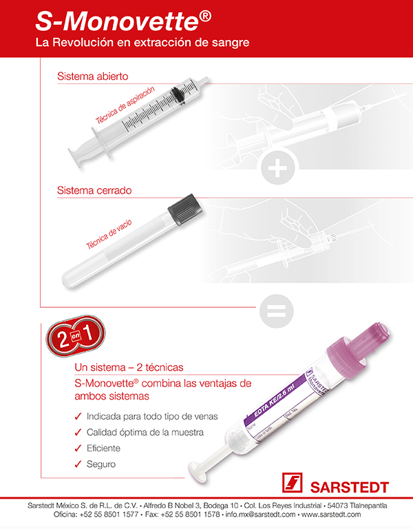

Sarstedt México, S. de R.L. de C.V.
Alfredo B. Novel Núm. 3, Bodega 10
Col. Los Reyes Industrial
C.P. 54073 Tlalnepantla, Edo. de México
(55) 8501-1577
(55) 8501-1578
info.mx@sarstedt.com
www.sarstedt.com

PRODUCTOS
|
MATERIALES PARA TOMA DE MUESTRAS SANGUÍNEAS |
|
|
Es el único sistema 100% cerrado que combina en un solo producto la posibilidad de realizar la extracción sanguínea por el principio de aspiración o por el principio al vacío. |
|
|
Son los únicos sistemas que posibilitan la recolección por capilaridad gracias al principio end-to-end. Con la posibilidad de captar desde 100 hasta 600 microlitros. Además de tener el único sistema micro que facilita la recolección venosa-capilar y la oportunidad de combinarlo con sistemas S-MONOVETTE®. Registro MICROVETTE: 2224R2001 SSA Registro MULTIVETTE: 22225E2001 SSA |
|
|
50 U.I./ml de calcio balanceado con heparina de litio como anticoagulante previene de forma segura la formación de coágulos y está indicado para la determinación de la prueba de equilibrio ácido base completa, incluyendo calcio ionizado y potasio por técnicas de ion selectivo, fósforo y magnesio por técnicas colorimétricas. Registro: 2184R2001 SSA |
|
|
Recipientes de muestra y recolección higiénica para los requisitos de un moderno análisis de orina. Cuenta con una amplia gama de tubos cónicos y recipientes fabricados en diferentes materiales con tapón a rosca o a presión, así como una gran variedad en medidas y kits completos para orina de 24 horas. Registro: 2184R2001 SSA |
|
|
* TUBOS |
Tubos para heces de PP en diámetros de 16.5 a 25 mm Recipientes de envío cilíndricos de PP que proporcionan una protección excelente contra golpes externos y cumplen con la normatividad europea EN 829 y pueden ser tratados en autoclave. |
|
MATERIALES Y PRODUCTOS PARA LABORATORIO |
|
|
Tubos de ensayo y centrifugación, tubos cónicos, vasos de recolección, microtubos, microtubos para crioconservación, puntas de pipeta, pipetas de transferencia, pipetas serológicas, cajas Petri, recipientes para envío de muestras, racks, etc. |
|
|
EQUIPOS Y MATERIALES PARA BANCO DE SANGREp. |
|
|
Maneja una amplia gama de productos para el manejo de componentes sanguíneos, desde equipos de congelación hasta abridores de segmentos, pasando por nuestros sistemas de transporte y almacenamiento de componentes sanguíneos. Incubadores y agitadores plaquetarios Incubadores para el almacenamiento controlado de concentrados de plaquetas. Agitadores para el almacenamiento de concentrado de trombocitos. Registro SAHARA III: 0240E2015 SSA Rodillos portátiles semiautomáticos Con ellos se pueden colocar grapas selladoras de forma sencilla y se pueden comprimir los tubos de las bolsas de sangre. Sahara III® Es el único sistema de descongelación y de incubación de productos sanguíneos por calor seco. Registro SAHARA III: 0240E2015 SSA Sillón de donantes El sillón de donantes es plegable, ligero, resistente y ahorra espacio. Los descansa brazos móviles y ajustables facilitan el sentarse y levantarse del sillón, así como la posición de descanso de los brazos durante la donación. Trans control Diseñados para la transportación de productos sanguíneos con gran seguridad, asegurando la temperatura óptima durante todo el trayecto de custodia del componente sanguíneo. De esta forma se transportarán los componentes sanguíneos de manera adecuada acorde a la normatividad vigente. Registro SAHARA III: 0240E2015 SSA Transwaag Es un equipo diseñado para calcular el volumen total de extracción; así como del mezclado ideal al momento de la extracción del paquete globular. Registro SAHARA III: 0240E2015 SSA |
|
|
CENTRÍFUGAS |
Microcentrífuga MC 6 Rotor de ángulo fijo de 6 posiciones para tubos de 0.2 a 1.5 ml, rotor de tira para 2 cadenas de 8 unidades, 2,000 x g a 6,000 rpm. Microcentrífuga MC 2 Rotor de ángulo fijo de 24 veces para recipientes de 0.5 a 2 ml, temporizador, función “quick run”, 16,060 x g en 13,000 Upm. Centrífuga de mesa LC 2 Rotor de 4 brazos, recipiente hermético, temporizador, función “quick run”, 2,383 x g a 3,500 rpm, amplia gama de accesorios (véase adelante). Cestillas y accesorios para la centrífuga de mesa LC 2 Tiene a su disposición una amplia gama de accesorios; por ejemplo, 12 tipos de cestillas para tubos de 1.5 a 100 ml, un rotor para placas de microtest de 2 x 2, etc. Centrífuga LC 24 115 V, incl Rotor libre de 6 posiciones, 6 soportes de tubos, 6 tapas para soportes de tubos. Tubos hasta 17 mm x 100 mm de longitud. Centrífuga SMC 6 y SMC 6 Plus Centrífugas económicas para uso en rutina, la centrífuga SMC 6 está especialmente diseñada para centrifugación de tubos de muestra; por ejemplo, la s-monovette con gel separador, el rotor basculante asegura resultados de separación óptimos. La centrífuga SMC 6 plus ofrece un programa de centrifugación adicional más suave para la centrifugación de muestras de orina. |
|
MEZCLADORES |
Mezclador por rotación Sarmix® M2000 Mezcla rápida, suave y homogénea, movimiento de inclinación giro, control de la velocidad de rotación, bandejas reemplazables para diferentes diámetros de tubo. Mezclador giratorio universal SM 1 Universal y económico, movimiento basculante, guías de apoyo antideslizantes, para tubos de hasta Mezclador de placas de test TPM 4 Mezclador especial para placas microtest y placas Petri, movimiento horizontal de rotación, control de la velocidad y preselección de tiempo, superficie antideslizantes para hasta 4 placas de microtest. |
|
EQUIPOS AUTOMATIZADOS |
Sistema de distribución de muestras PVS Sistema robotizado multifuncional de apertura, clonación, distribución, rechazo, etc. de muestras. |
|
SARSTEDT BIOLOGÍA MOLECULAR, |
|
|
* SARSTEDT BIOLOGÍA MOLECULAR, |
Tenemos la solución ideal para las aplicaciones para el laboratorio de investigación. Frascos de cultivo, placas con tratamiento, descamadores, microtubos, puntillas grado Biosphere y grado PCR, así como una amplia gama de productos para medicina y ciencia. |